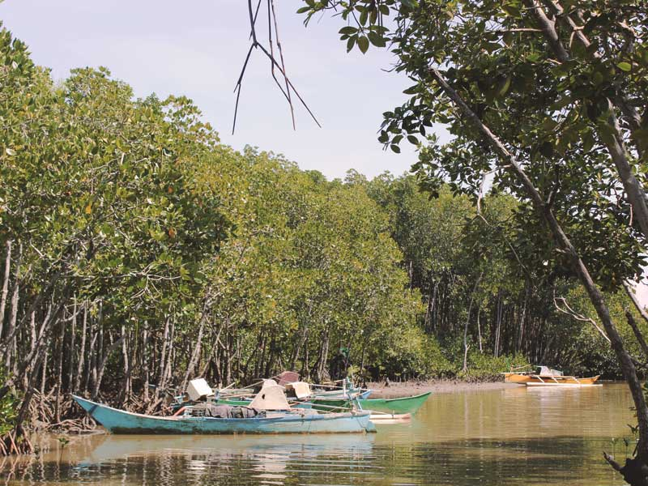

Climate Change Governance Research
Surabaya, Semarang, Manado, Bandar Lampung, Kupang and Surakarta, Indonesia
Indonesian cities are facing multiple challenges from the combination of climate hazards and rapid urbanization. While attention is often focused upon physical interventions as a means to reduce vulnerability Kota Kita conducted two different research initiatives that explore lessons for improving urban governance as a means of building more resilient and adaptive cities.
In the first research article, entitled ‘When non-climate urban policies contribute to building urban resilience to climate change: lessons learned from Indonesian cities’ Kota Kita looked at lessons for from two riverbank relocation processes conducted in Surabaya and Surakarta. In struggling to respond to the challenge of flooding, as well as the effects of rapid urbanization, some both city governments developed interesting policy innovations that offer lessons about vulnerability reduction that take advantage of recent decentralization legislation. Both governments crafted social policies that respond to the specific context of their citizens and needs.
The research demonstrates examples of innovative policies that have increased water provision to urban poor residents, reduced the vulnerability of riverbank settlements, and introduced technology in gathering and sharing vital data to increase public access to information. Examined through a resilience framework, the cases reveal how in an era of decentralization and increasing climate risk, some city governments have adopted an open-minded and responsive approach and introduced flexible and inclusive policies that have led to successful reductions in social vulnerability. The research contributes to efforts to document lessons about policy design and implementation and provides conclusions about why these policies have been successful in bolstering resilience and reducing vulnerability.

For the second research article, entitled ‘How can Climate Change Vulnerability Assessments best impact policy and planning?: Lessons from Indonesia’ Kota Kita conducted research in four cities Manado, Bandar Lampung, Semarang and Kupang.
In recent years there have been a number of climate change vulnerability assessments conducted in cities across Indonesia; they have influenced the way that cities understand climate change and the policies and approaches they adopt. But despite the number and variety of approaches of these assessments there has been little research into which are most successful at raising awareness and informing adaptation planning and policymaking.
This research looks at two different models, one that was deployed in the cities of Semarang and Bandar Lampung through the Asian Cities Climate Change Resilience Network program, and another developed by UNDP and implemented by Yayasan Kota Kita in Manado and Makassar. They vary in duration, funding, emphasis on shared learning, stakeholder involvement, and external support; studying them helps indicate how different processes may have different impacts upon decision-making and policy implementation. The research contributes to efforts to design more effective climate change vulnerability assessment processes, providing recommendations as to how they may successfully engage and raise awareness of stakeholders, and bring about lasting policy making and planning outcomes.
